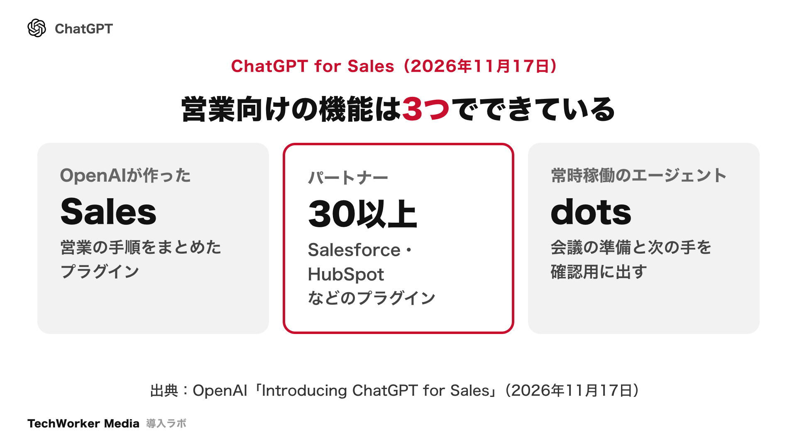
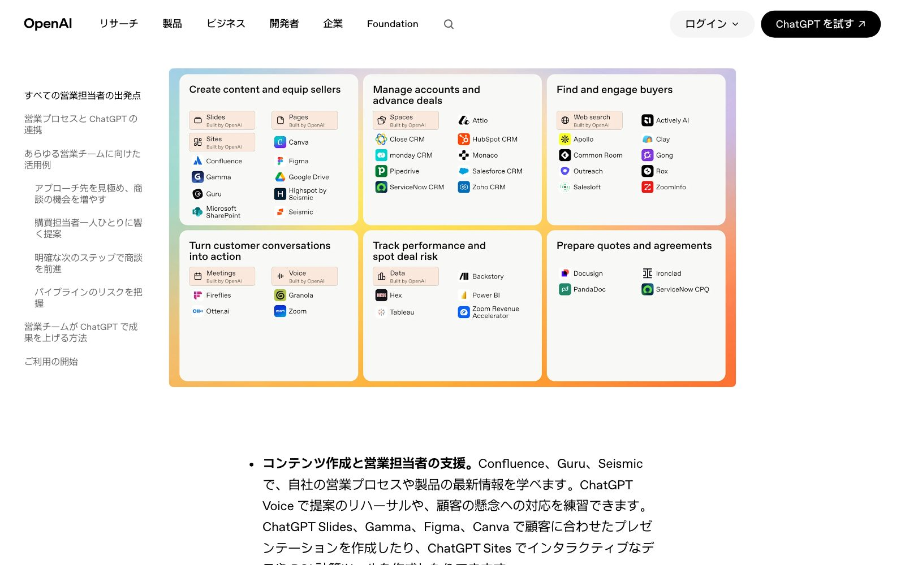
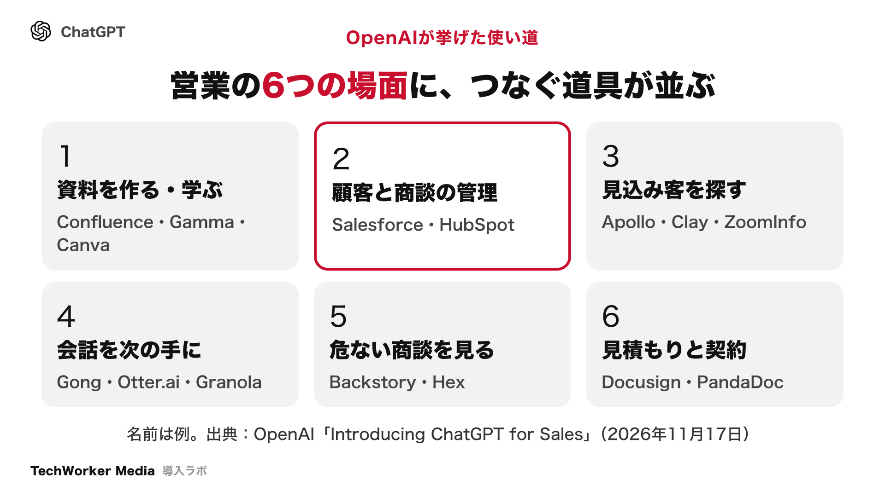
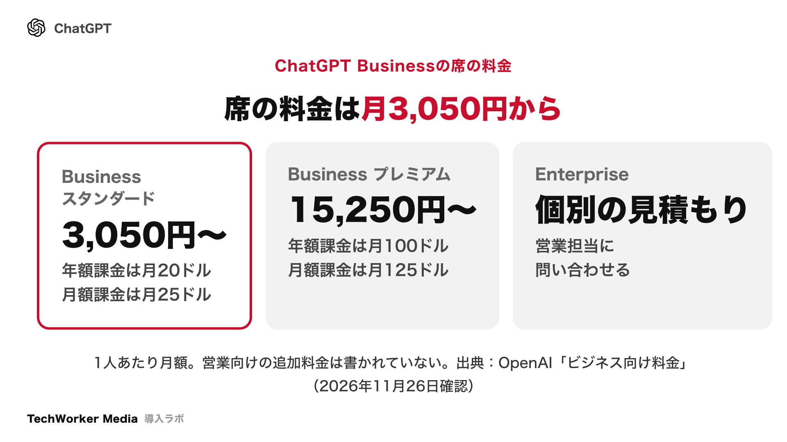
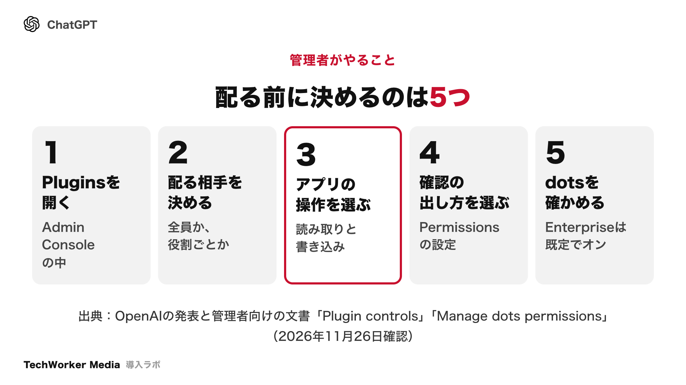

OpenAIは2026年11月17日、営業向けの機能「ChatGPT for Sales」を発表しました。営業担当が顧客を選ぶところから、商談の準備、商談後のフォローまでをChatGPTで助ける機能です。
- 中身：OpenAIが作った「Sales」のプラグインと、SalesforceやHubSpotなど30以上のパートナーのプラグインです。
- dots：常時稼働のエージェントが会議の準備の資料を作り、変化と次の手の案を確認用に届けます。
- 管理者：BusinessとEnterpriseの管理者が、管理画面の「Plugins」から配ります。日本で使えるかは公式に書かれていません。
発表と料金ページ、管理者向けの文書を2026年11月26日に読み、条件を確かめました。営業責任者と情シスが、試す前に決めることをまとめます。
ChatGPT for Salesとは何ですか？
ChatGPTを、営業が使っている道具とつなぐための機能の一式です。OpenAIのSalesプラグイン、30以上のパートナーのプラグイン、常時稼働のエージェントdotsの3つでできています。

原文“It includes our new Sales plugin with dedicated skills for sellers, and more than 30 new and enhanced partner plugins in ChatGPT …”
日本語訳営業担当のための専用のスキルを持つ新しいSalesプラグインと、ChatGPTの中で新しく出た、または強化された30以上のパートナーのプラグインを含みます。
- Salesプラグイン：OpenAIが作った、営業の決まった作業の手順の一式です。攻める会社を選ぶ、商談の準備をする、フォローの文を下書きする、といった作業に使います。
- パートナーのプラグイン：CRMや営業支援の道具とつなぎ、その道具にある顧客の情報をChatGPTが使えるようにします。
- dots：2026年9月29日に出た、常時稼働のエージェントです。クラウドに自分のパソコンとブラウザを持ち、会話の合間も仕事を進めます。
発表のページには、営業の場面ごとにパートナーの名前を並べた図が載っています。

出典：OpenAI「ChatGPT for Sales のご紹介」の画面（2026年11月26日に撮影）
図の枠に色が付いた「Slides」「Data」「Meetings」などは、OpenAIが作った物です。ほかはパートナーの製品で、CRMはSalesforce、HubSpot、Zoho CRMなどが並びます。Gongは、図では見込み客探しの枠に、発表の本文では会話の活用の場面に挙がっています。下の表は本文に合わせました。
営業のどの仕事に使えますか？
OpenAIは6つの場面を挙げています。顧客と商談の管理、見込み客探し、商談の会話の活用、見積もりと契約などで、それぞれにつなぐ道具の名前が付いています。

| 場面 | 発表に書かれた使い方 | つなぐ道具の例 |
|---|---|---|
| 資料を作る・学ぶ | 営業の手順と製品の新しい情報を学ぶ。提案の練習をする。顧客ごとの資料を作る | Confluence、Guru、Seismic、Gamma、Canva、Figma |
| 顧客と商談の管理 | 顧客の情報を集めて商談に備え、約束した事を確かめ、次の手を決める | Salesforce、HubSpot、Close CRM、monday CRM |
| 見込み客を探す | 会社の変化をつかみ、連絡する理由を見つける。連絡の計画を立てる | Apollo、Clay、Common Room、Outreach、Salesloft |
| 会話を次の手に | 商談の記録から相手の優先順位と合意した次の手をつかみ、フォローを下書きする | Gong、Otter.ai、Granola |
| 危ない商談を見る | 注意が要る商談を見つけ、何が変わったかを説明する | Backstory、Hex |
| 見積もりと契約 | 相手が進めると決めたときに、見積もりと契約書の準備を助ける | Docusign、Ironclad、PandaDoc、ServiceNow CPQ |
出典：OpenAI「Introducing ChatGPT for Sales」（2026年11月17日、2026年11月26日確認）
CRMへの書き込みについて、発表は次のように書いています。
原文“After a call, have ChatGPT draft the follow-up, capture agreed next steps, and prepare updates to the customer record.”
日本語訳商談の後は、ChatGPTにフォローの文を下書きさせ、合意した次の手を書き留め、顧客の記録の更新を準備させます。
同じ段落は会話の中で文を直し、変更の案を人が確かめる流れを書いています。Attioのような道具をつなげば、次の手をChatGPTからCRMに保存できるとも書いています。CRMを自動で書き換える使い方は、発表には書かれていません。
料金はいくらですか？
営業向けの機能の追加料金は発表にも料金ページにも書かれていません。費用の基本はChatGPT Businessの席の料金で、日本からの表示はスタンダードの席が月3,050円からです。

| プラン | 日本からの円の表示 | ドルの表示（1人の月額） | 条件 |
|---|---|---|---|
| Business スタンダード | 3,050円から | 年額課金は20ドル、月額課金は25ドル | Businessは従業員2〜200人のチーム向け |
| Business プレミアム | 15,250円から | 年額課金は100ドル、月額課金は125ドル | スタンダードより利用枠が多く、5時間ごとの上限がない |
| Enterprise | 個別の見積もり | 営業担当に問い合わせる | |
出典：OpenAI「ビジネス向け料金」の日本からの表示（2026年11月26日確認）。円の額が年額課金の場合の額か、消費税を含むかは書かれていません
円の表示で計算すると、スタンダードの席を10人分で月30,500円、12か月で366,000円です。料金ページは2026年12月から、プランの利用上限がChatGPTとCodexの全体で共通になると書いています。
dotsが使える席の種類は、公式の資料で書き方が違います。料金ページの比較表ではBusinessのdotsは「Business プレミアム」とあり、dotsの文書は対象の地域のスタンダードの席でも使えると書いています。スタンダードの席で試す前に、自社の画面で確かめます。
管理者向けの文書は、つなぐ先のサービスが自社の要件を満たすかを確かめるよう書いています。SalesforceやGongなど、パートナーの製品の契約と料金、データの扱いは、本記事では確かめていません。
料金ページには期限つきの案内も出ています。11月30日までにBusinessに申し込むと、12月31日まで追加料金なしで利用枠が2倍になり、高速モードも使えます。
ChatGPT・Claude・Gemini・Copilotの法人契約の料金と社内ルールの雛形をまとめた稟議用の資料は、下の枠から受け取れます。
管理者は何を設定しますか？
管理画面の「Plugins」で、Salesとパートナーのプラグインを誰に配るかを決めます。そのうえで、各アプリに許す操作と、使う前に確認を求めるかを選びます。

発表は、管理者の手順を次のように書いています。
原文“ChatGPT Business and Enterprise admins can enable ChatGPT for Sales for your team by opening the Admin Console, selecting your workspace, and selecting Plugins.”
日本語訳ChatGPT BusinessとEnterpriseの管理者は、管理画面（Admin Console）を開き、ワークスペースを選んで「Plugins」を選ぶと、チームでChatGPT for Salesを使えるようにできます。
管理者向けの文書「Plugin controls」によると、配り方は次の4つから選びます。
| 配り方の設定 | 変わること |
|---|---|
| Available for installation | 社員が自分で入れられる |
| Installed for workspace | 既定で入る（役割ごとの設定は残る） |
| Customize by role | 役割ごとに使える人を決める（対応する場合） |
| Disable | ワークスペースの既定で使えなくする |
出典：ChatGPT Learn「Plugin controls」（2026年11月26日確認）
プラグインを入れただけでは、アプリのデータは使えません。各アプリの「App access」で使える人を選び、「Tools」（または「Actions」）で読み取りと書き込みの操作を許します。あとから増えた操作を許すかは「New tools」で決め、使う前に確認を求めるかは「Permissions」で決めます。
dotsにも管理の設定があります。対象となるEnterprise・Edu・Healthcareのワークスペースでは、2026年11月18日から、外す設定をしない限り社員が既定で使えます。自分のdotを作るかは、社員が各自で選びます。使える人を絞るときは、ワークスペースの既定で「Use dots」をオフにし、使わせる人の役割でだけオンにします。
顧客の情報は安全に扱われますか？
BusinessとEnterpriseでは、会社のデータは既定でモデルの学習に使われないと、料金ページに書かれています。つないだアプリの情報は管理者の設定とつないだアカウントの権限の範囲でだけ使われます。
原文“An app can only use the information and actions allowed by its settings and the connected account's permissions.”
日本語訳アプリが使えるのは、アプリの設定と、つないだアカウントの権限で許された情報と操作だけです。
- CRMの権限：つないだアカウントがCRMで見られない商談は、ChatGPTからも見られません。共有の接続（workspace connection）を使うときは、社員にその共有のアカウントを使う権限が要ります。管理者は、作業に要る権限を持つアカウントを選びます。
- 書き込みの前：管理者向けの文書は書き込みを許す前に、何を変えられるか、社員が結果をどう確かめて直すかを確かめるよう書いています。
- dotsの記録：Enterpriseでは、dotsの会話やアプリの呼び出しのうち対応している記録を、Compliance APIで取り出せます。
- 止めた後：dotsの文書は作業を止めても、すでに終わった操作は元に戻らないと書いています。
社員が会社の許可なく個人のAIを使う問題は、「シャドーAIとは」で扱っています。
日本の営業組織でも使えますか？
日本で使えるかは2026年11月26日の時点で公式に書かれていません。発表は、プラグインと機能の提供はプラン、地域、ワークスペースの設定で変わると書いています。
日本語版の発表ページはあり、日本向けの料金ページにもプラグインとdotsが載っています。ただ、日本での提供を約束する文はありません。発表の図に並ぶのは海外の会社の製品で、Salesforce、HubSpot、Microsoft SharePoint、Google Drive、Zoom、Power BIも含まれます。日本で作られた営業支援の道具の名前は、図に見当たりません。
確かめる方法は自社の管理画面の「Plugins」を開き、Salesのプラグインと、使っているCRMのプラグインが一覧に出るかを見ることです。TechWorkerは自社のワークスペースで、まだ確かめていません。
営業責任者と情シスが今週決めることは何ですか？
試すチームと商談、CRMへの書き込みを許すか、dotsの案を誰が確かめるか、使う道具の一覧、効果の測り方の5つです。
- 試すチームを決める：CRMの入力がそろっているチームを1つ選び、2週間で試す商談を決めます。
- 最初は読み取りだけにする：CRMのアプリは読み取りの操作から許し、書き込みは確かめる手順ができてから許します。
- 確かめる人を決める：dotsが出す次の手の案と、CRMの更新の案を、誰がいつ見るかを決めます。
- 道具の一覧を作る：自社で使うCRM、会議の記録、契約の道具が、プラグインの一覧にあるかを確かめます。
- 効果の測り方を決める：商談の準備と報告の入力にかかる時間を、試す前と後で測ります。
5つはTechWorkerの提案です。ChatGPTの法人のプランの違いは「ChatGPTの法人契約と料金」で解説しています。他社のAIと比べるときは、「生成AIの法人契約を比較」が使えます。
よくある質問
発表は、パートナーのプラグインと機能の提供は、プラン、地域、ワークスペースの設定で変わると書いています。管理者が有効にする手順は、BusinessとEnterpriseについてだけ書かれています。無料版やPlusで営業向けのプラグインを使えるかは、発表には書かれていません。dotsについては、dotsの文書がPlusの一部の利用者に順に提供すると書いています。
発表は、dotsが変化と次の手の案を「確認用に」出すと書いています。dotsの文書によると、アカウントに影響する操作や情報を共有する前に、そのまま進めるか、承認を求めるか、人に渡すかを点検が決めます。CRMに書き込めるかは、管理者がアプリの書き込みの操作を許したかと、つないだアカウントの権限で決まります。
発表にも料金ページにも、営業向けの機能の追加料金は書かれていません。Enterpriseのdotsはプレビューの間は無料です。dotsがChatGPT WorkやCodexに任せた作業は、それぞれの通常の料金がかかると管理者向けの文書に書かれています。
日本語版の発表ページはあります。日本語での動作や品質は、公式に書かれていません。TechWorkerは自社のワークスペースでまだ試していません。
なりません。管理者向けの文書によると、アプリは管理者の設定と、つないだアカウントの権限の範囲でだけ情報と操作を使えます。共有の接続（workspace connection）を使うときは、社員にその共有のアカウントを使う権限が要ります。管理者は、作業に要る権限を持つアカウントを選びます。
次の一歩は何から始めればよいですか？
管理画面の「Plugins」を開き、Salesと自社のCRMのプラグインが出るかを確かめることから始めます。
- 管理者が「Plugins」の一覧で、Salesと自社のCRMのプラグインを探します。
- 試すチームにだけ配り、CRMのアプリは読み取りの操作だけを許します。
- 商談1件の準備の資料を作らせ、営業担当がCRMの記録と見比べます。
TechWorkerの研修では、受講者の実際の営業の業務1本について、ChatGPTで商談の準備や報告の下書きを作るところまで当日に仕上げます。30日後に、使った人の割合と1件にかかる時間を測って報告します。検討段階のご相談だけでも歓迎です。
出典と確認範囲
確認日：2026年11月26日。料金は日本から開いた公式ページの表示です。円の額が年額課金の額か、消費税を含むかは書かれていません。日本で使えるか、日本語での動作、営業向けの機能の追加料金、無料版とPlusで営業向けのプラグインを使えるかは、公式に書かれていません。dotsが使える席の種類は、料金ページとdotsの文書で書き方が違います。パートナーの製品の契約と料金、データの扱いは確かめていません。TechWorkerのワークスペースでの動作は、本記事では確かめていません。今週決める5つはTechWorkerの提案です。